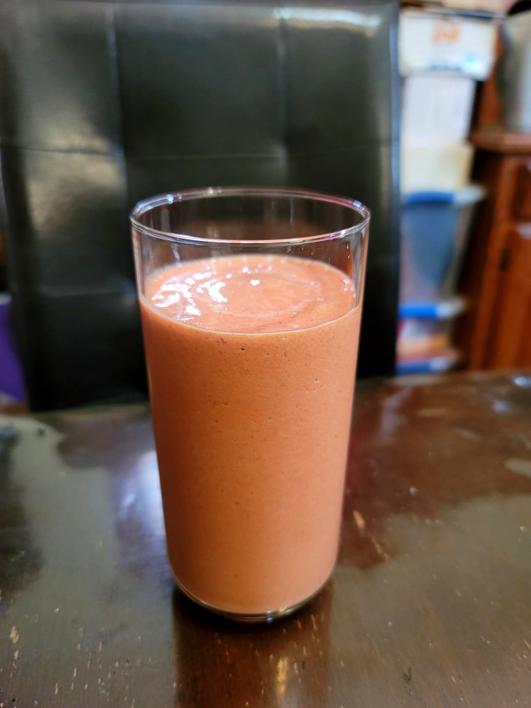

Batido de Zapote (Mamey Smoothie)

Ingredients:
- 2 cups Mamey, chopped
- 1 1/2 cup Milk
- 3 tbsp Condensed milk or Sugar, or to taste
- 1 cup Ice
- Optional: 1 tsp Vanilla extract
- Optional: 1/2 tsp Cinnamon
Instructions:
- Combine all ingredients into a blender. Blend until smooth. Serve immediately.